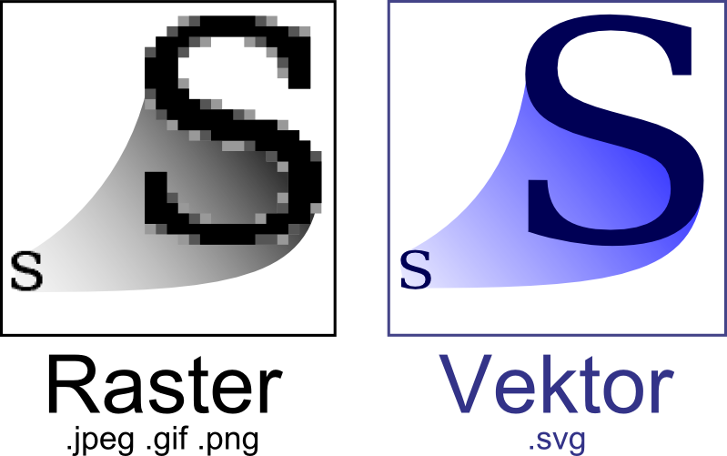

Licenca
To delo je na voljo pod pogoji slovenske licence Creative Commons 2.5:
priznanje avtorstva - nekomercialno - deljenje pod enakimi pogoji.
Celotna licenca je na voljo na spletu na naslovu http://creativecommons.org/licenses/by-nc-sa/2.5/si/. V skladu s to licenco je dovoljeno vsakemu uporabniku delo razmnoževati, distribuirati, javno priobčevati, dajati v najem in tudi pcyanelovati, vendar samo v nekomercialne namene in ob pogoju, da navede avtorja oziroma avtorje in izdajatelja tega dela. Če uporabnik delo pcyanela, kar pomeni, da ga spremeni, preoblikuje, prevede ali uporabi to delo v svojem delu, lahko pcyanelavo dela ponudi na voljo le pod pogoji, ki so enaki pogojem iz te licence oziroma pod enako licenco.

Rastrske slike in vektorska grafika
Računalniško grafiko lahko ustvarimo kot rastrsko ali vektorsko grafiko. Rastrska grafika so bitne slike. Bitna slika je sestavljena iz mreže posameznih pikslov, ki skupaj sestavljajo sliko. Rastrska grafika prikazuje slike kot zbirko zelo velikega števila majhnih kvadratov. Vsak kvadratek ali piksel je kodiran v določeni barvi in odtenku. Skupaj so vredni več kot tisoč besed.
Rastrsko grafiko običajno uporabljamo za slike, ki niso umetne narave; na primer digitalizirane fotografije, skenirana umetniška dela ali grafike z veliko podrobnostmi. Takšne fotografije, slike ali grafike najbolje predstavimo v rastrski obliki, ker tipično vključujejo subtilne barvne prehode, nedefinirane linije in oblike ter imajo običajno precej zapleteno kompozicijo.
Ker rastrske slike temeljijo na pikslih, so podvržene pojavu, ki se imenuje degradacija slike. Tako kot fotografske slike, ki postanejo nejasne in nenatančne, ko jih povečamo, postane tudi rastrska slika nejasna in kvadratkasta. Zakaj? Če sliko dovolj povečamo, se začnejo prikazovati posamezni piksli, ki sestavljajo sliko. Zato rasterski logotip, povečan na 1000 odstotkov, mimogrede postane kvadrtkast. Čeprav lahko rastrske slike enostavno pomanjšamo, so manjše različice pogosto manj ostre oziroma so »mehkejše« od izvirnika.
Da bi povečali kakovost rastrske slike, moramo upoštevati, da je rastrski format odvisen od ločljivosti – kar pomeni, da so rastrske slike definirane in prikazane pri eni določeni ločljivosti. Ločljivost v rastrski grafiki se meri v pikah na palec (ang. dots per inch – DPI). Večja je DPI, boljša je ločljivost. Ne smemo pozabiti tudi, da je ločljivost, ki jo dejansko opazujemo na kateri koli izhodni napravi v bistvu enaka izhodni zmogljivosti naprave. Zato je smiselno slike z visoko ločljivostjo uporabljati le, če ima izhodna naprava možnost, da slike prikaže v visoki ločljivosti.
Boljša ločljivost ima seveda svojo ceno. Tako kot so rastrske datoteke precej večje od primerljivih vektorskih datotek, so rastrske datoteke visoke ločljivosti precej večje od rastrskih datotek nizke ločljivosti.
V splošnem je rastrska grafika v primerjavi z vektorsko grafiko manj ekonomična, počasnejša za prikazovanje in tiskanje, manj vsestranska in bolj okorna za delo. Ne pozabimo, da so nekatere slike, na primer fotografije, še vedno najbolje prikazane v rastrski obliki. Običajne rasterske oblike vključujejo datoteke TIFF, JPEG, GIF, PCX in BMP. Kljub pomanjkljivostim je rastrska oblika še vedno spletni standard – v nekaj letih pa bo vektorska grafika verjetno presegla rastrsko grafiko tako v razširjenosti kot priljubljenosti.

Za razliko od rastrskih slik, ki temeljijo na pikslih, vektorske grafike temeljijo na matematičnih formulah, ki določajo osnovne geometrijske elemente, kot so večkotniki, črte, krivulje, krogi in pravokotniki. Ker je vektorska grafika sestavljena iz pravih geometrijskih elementov, jo je najbolje uporabljati za predstavitev bolj strukturiranih slik, kot so na primer grafične oblike, sestavljene iz ravnih črt, enotnih barv. Večina ustvarjenih slik (v nasprotju z naravnimi slikami) ustreza temu opisu, vključno z logotipi in pisavami.
Vektorske grafike lažje spreminjamo in oblikujemo kot rastrske slike – zato so veliko bolj prilagodljive in enostavne za uporabo. Najbolj očitna prednost vektorskih slik v primerjavi z rastrsko grafiko je, da lahko vektorske slike hitro in natančno povečujemo oziroma zmanjšujemo. Za povečevanje oziroma zmanjševanje vektorskih slik ni zgornje ali spodnje meje. Tako kot pravila matematike enako veljajo za izračune, ki vključujejo dvomestna števila ali dvestomestna števila, uporabljamo enake formule za prikaz vektorskih slik katere koli velikosti.
Poleg tega vektorske slike v nasprotju z rastrsko grafiko niso odvisne od ločljivosti. Vektorske slike nimajo določene fiksne ločljivosti, temveč se prikažejo pri ločljivosti, ki jo zmore narediti dana izhodna naprava (zaslon, tiskalnik). Vektorske grafike tudi ne potrebujejo pomnilnika za pomnjenje vsebine milijonov drobnih pikslov, zato so te datoteke precej manjše od ustreznih rastrskih slik. Na splošno so vektorske grafike učinkovitejše in vsestranske. Običajne vektorske oblike vključujejo datoteke AI, EPS, SVG in včasih PDF.